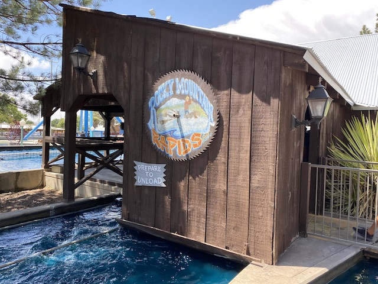

| |
Cliff's Amuesment Park Review

Cliff's Amusement Park is a small amusement park right in the middle of Albuquerque, New Mexico. The park doesn't get talked about that often simply because....there's not a whole lot nearby it. There are no other theme parks in the area. The closest "major" theme park would be Elitch Gardens, which is over 6 hours away (443 miles) in Denver, CO. And Elitch Gardens isn't exactly a big name theme park with anything that truly stands out. Nor is Cliff's for that matter. Coaster enthusiasts who live in Albuquerque and want to ride something truly major will have to make the longass drive to either Texas (SFOT is 9 hours away. SFFT is 10), or California (SFMM is 11 hours away). Oh, and there's Lagoon 9.5 hours away in Salt Lake City, UT. Yeah. You're slightly closer to the Texas parks, but....the point is still that....Albuquerque is essentially an island as far as theme parks go. And Cliffs is as good as you're gonna get. But hey. This is a surprisingly fun little park. For the most part, it's just a standard cute little park with rides that you can find at any standard amusement park. But they do have the New Mexico Rattler. And that is a really fun ride (I have a review of it down below if you want to hear me go into more details about the park). And while the rest of the park may just have standard rides, they're still a lot of fun. Yeah. The park is primarily for locals since....look how far away they are from any other major theme parks. But I still had fun here, and if you're in Albuquerque, then this place is DEFINATELY worth checking out. Not only because New Mexico Rattler is really fun, but the rest of the park is cute too.
Rollercoasters
There is a link to a review of all the Rollercoasters at Cliff's Amusement Park.
Top Coasters
New Mexico Rattler Review

Family Coasters
Galaxi Review

Kiddy Coasters
Spin'O Rama Review

Flat Rides
Here are the reviews of all the Flat Rides at Cliff's Amusement Park. And the flat ride collection at Cliffs is....better than you think. OK. It's not great. It's mostly a bunch of standard flat rides that you can find at any small park or carnival. But they run pretty well, are a lot of fun. And the more notable ones still are worth pointing out. First up, we have Cliff Hanger. This is the parks drop tower. And not just any drop tower. Nope. This is a shock drop. These rides are just a ton of fun. You never know when you're going to reach the top. You just keep climbing and then all of a sudden.....BAM!!! Drop down to the ground. No matter how many times I ride them, these still always manage to catch me off guard. The other notable flat ride here would be Downdraft. This is a downdraft. This is a ride that I saw in both of my vists to Knoebels. But never had the time to hit it up there. Well, I got to ride it here. And....not only does it look cool. But it ran just as good as it looked. If not better. This thing was essentially a scrambler mixed with a super frog hopper. And this thing produces some MEAN laterals. And I honestly can't think of any other parks this ride is at aside from here and Knoebels. So it's actually kind of unique. And yeah. TOTALLY WORTH CHECKING OUT!!! Speaking of rare rides, Cliffs still has their falling star, which are becoming more of a rare breed by the day. Which is a shame as they're really fun rides. I also checked out their tilt a whirl, their music express, and their bumper cars. None of these stand out and are just standard cookie cutter versions of these rides. But I had fun on all of them. They also have a mini frisbee (I think it was closed. If not, I regret not hitting it as these are fun rides), a Larson Super Loop (Meh, fun, but #NoRegrets), a "Starflyer" (This is WAY too small to be a real starflyer. These are elevated chairswings in my book), a pirate ship, and some kiddy flat rides.
 Shock Drops are always great.
Shock Drops are always great.
 Not only does it look cool, but it also has some seriously mean laterals.
Not only does it look cool, but it also has some seriously mean laterals.
Dark Rides
Cliffs Amusement Park doesn't have any dark rides.
Water Rides
I rode the park's log flume, Rocky Mountain Rapids. No. I did not make a mistake. Though I think the park did. They named their log flume Rocky Mountain Rapids. They do not have a river rapids ride (though that probably would be a cool addition to Cliffs upon thinking about it). This is the name of their log flume. And....nothing about this log flume stands out. It's not very big and the layout is kind of mediocre. Just meander around before going up a fairly small hill and drop back down. And it doesn't even get you that wet (at least not when I rode it). So it's not even that great for cooling off in the hot desert Albuquerque heat. But regardless, it's still a fun ride. I mean....log flumes are just fun rides. Even the poor ones. =) They also have a pair of Wet'N'Dry slides. I didn't do them. But that's still cool to check out.

I have no idea why Cliffs named their log flume this. But regardless, log flumes are still fun.
Dining
I did not eat at Cliffs.
Theming and Other Attractions
Here are the reviews of all the other stuff at Cliff's Amusement Park. As for theming, there's pretty much none. Yeah. Sorry. This is a TOTAL amusement park. Sure, there may technically be a tiny bit of Western theming. But the effort went into theming Cliffs is about on par as the effort I do when I plop down a few random scenery pieces when playing OpenRCT2. OK. So theming is a bust. What other attractions does Cliffs have? Well, I only did the rides here. Nothing else. But that's because Cliffs essentially has nothing else. Just some midway games that you can find at essentially any carnival. Yeah. Cliffs is ONLY about the rides.
In Conclusion
Cliffs is a fun little amusement park that'll definetly keep you entertained for a couple hours. I mean, the main drive for almost any enthusiast is pretty good. Cause....yeah. New Mexico Rattler is a really good wooden coaster and just a lot of fun. But on top of that, the park also has a handful of other rides. Yeah. None of these other rides are anything special. A crappy Galaxi coaster, some basic flat rides, and a mediocre log flume. None of these other things stand out. But screw it! It's still fun! You paid to get in! Might as well enjoy the park! Even if you're a credit whore! It's not like there's any other parks to rush off to nearby! =P Yeah. It may be a park solely for Albuqeurque locals who don't have any other theme parks remotely nearby for competition. And if you find yourself in an existential quandary, full of loathing and self-doubt, wracked with the pain and isolation of your pitiful meaningless existance, at least you can take a small bit of comfort in knowing that somewhere out there in this crazy old mixed-up universe of ours, there's still a little place called Cliff's Amusement Park, located in Albuquerque!
Enthusiast FAQs.
*Are there kiddy coaster restrictions? - Nope. You can ride Spin'O Rama.

Tips
*CHECK THE F*CKING SCHEDULE!!! This park, for some reason, is ALWAYS closed on Mondays. And sometimes Tuesdays as well. I'm not sure why. But it seems like literally EVERY PLACE that isn't a major chain is ALWAYS closed on Mondays in the Southwest. I HATE this rule and it f*cked me over the first time I tried visiting. While I STRONGLY disagree with this stupid rule, the point is DO NOT MAKE THIS MISTAKE!!!
*This place also has the dumb "Everything closes immedietly when the park closes" rule. Really hate that. So keep that in mind if you plan on staying at the park til closing.
*Galaxi will probably have a long slow line due to its very poor capacity. Just warning you.
*Get lots of rides on New Mexico Rattler.
*Have Fun!!!!
Theme Park Category:
Small Park
Location
Albuqerque, New Mexico, USA
Last Day Visited
June 9, 2022
Video
I did not shoot enough video to make a Cliffs video. I might be able to make a small one someday in the future though.
Complete Update List
2022
New Mexico 2022
Here's a link to the parks website.
Home
|